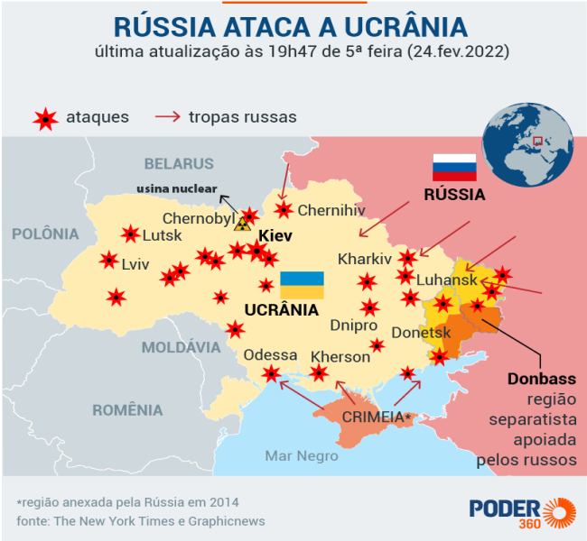

Por que a Ucrânia quer ingressar na OTAN?
(Organização do Tratado do Atlântico Norte).
•Segurança contra as ameaças externas: ofereceria uma garantia de defesa coletiva,
devido ao acontecimento da anexação da Crimeia em 2014 pela Rússia e alguns
conflitos no leste da Ucrânia;
• Reformas militares: com a entrada na OTAN, melhoraria a defesa e a modernização
das forças armadas ucranianas;
• Integração com o Ocidente: estabeleceria relações políticas e econômicas com a
Europa Ocidental e os Estados Unidos;
Efeitos da adesão da Ucrânia na OTAN para a Rússia
•Resposta militar: aumento da presença militar nas fronteiras ucranianas e em
áreas adjacentes (leste e sul da Ucrânia, ex.: Donbass, Zaporíjia, Kherson);
• Impacto nas relações com o Ocidente: a entrada da Ucrânia na OTAN
provavelmente agravaria os lanços da Rússia com os países ocidentais,
consequentemente, a sanções adicionais (ex.: bloqueios de exportações e
importações, restrição a acessos financeiros internacionais e ao comércio de
moedas, e o congelamento de bens e propriedades de indivíduos ou funcionários
de uma determinada empresa) e um isolamento maior.
• Reforço da narrativa interna: a Rússia poderia usar a adesão da Ucrânia à
OTAN para justificar políticas de defesa mais violentas afim de reforçar a
narrativa que está cercada por inimigos, adquirindo um apoio interno (ex.:
confiança da população);
O que a Rússia tentou fazer para impedir a adesão da Ucrânia na OTAN
Primeiramente, a Rússia aplicou várias medidas de estratégias e ações, dentre elas sã
• Ameaças militares: a Rússia estava tentando mostrar o seu poder militar perto da
fronteira ucraniana, por exemplo, manobras e mobilizações de tropas, para
desencorajar a Ucrânia de entrar na OTAN;
• Desinformação e propaganda: a Rússia lançou campanhas de notícias falsas,
alegando que se a Ucrânia entrasse na OTAN traria conflitos à região, com o
objetivo de que o público parasse de apoiar a aliança;
• Apoio a grupo separatistas e partidos ANTI-OTAN: a Rússia estava apoiando
movimentos (grupos separatistas e partidos ANTI-OTAN nas regiões de Donetsk
e Luhansk) que eram contra a adesão da Ucrânia na OTAN, para gerar conflitos
no território ucraniano e, consequentemente desistir da aliança;
Veja a imagem abaixo:

A Ucrânia conseguiu entrar na OTAN?
Atualmente, a Ucrânia não conseguiu ingressar na OTAN (Organização do Tratado do
Atlântico Norte). Embora, buscando a adesão e participando de várias parcerias com a
aliança, infelizmente, não conseguiu. Ao longo dos anos, o apoio à adesão à OTAN
cresceu na Ucrânia, devido os conflitos russos no território ucraniano, mas o processo
de adesão requer a aprovação unânime (todos) dos membros da aliança, e questões de
segurança e estabilidade continuam a ser preocupações significativas.
A OTAN tem apoiado a Ucrânia com assistência militar e política, mas a adesão
formal ainda depende de vários fatores, incluindo a situação de segurança no país e as
dinâmicas políticas na aliança, ou seja, está em constantes mudanças.
Por que a Ucrânia quer entrar na União Europeia?
Existem diversos fatores, mas, tecnicamente, são os mesmos motivos para querer entrar na
OTAN, visando, em sua maioria, a segurança do povo e do país.
A integração econômica, que não só proporcionaria várias oportunidades de investimento para
a Ucrânia, como também daria um acesso a um mercado muito maior, o que ajudaria a
impulsionar sua economia e melhorar sua infraestrutura.
As reformas políticas e socias ajudariam na luta contra a corrupção e direitos humanos, o que
melhoria tanto a qualidade de vida quando a democracia do país.
Com a Ucrânia entrando na UE, eles teriam mais segurança, assim como mais aliados, o que
ajudaria bastante a Ucrânia, principalmente em um contexto de agressão por parte dos russos,
já que a aliança da UE iria oferecer um contrapeso à influência russa na região. Esse seria um
dos meios de fortalecer o apoio político e diplomático da Ucrânia, o que ajudaria a Ucrânia
em sua luta pela soberania e integridade territorial. A adesão da Ucrânia na UE também é
vista como uma forma de alinhar a Ucrânia aos valores europeus, ou seja, iria promover uma
identidade nacional para a Ucrânia, que se afastaria da influência russa.